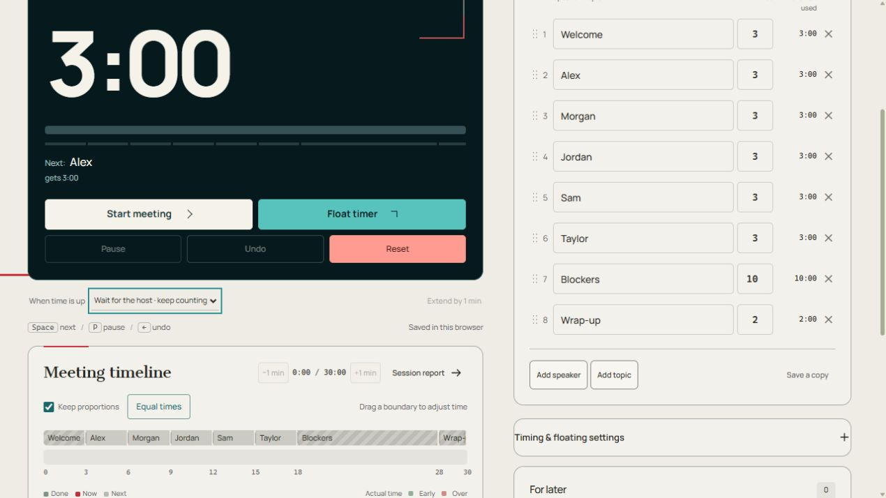

Minuteur de réunion
Chronologie de la réunion
0:00 / 56:00Réunion terminée
Déroulé de la séance
Paramètres de synchronisation et flottants
Pour plus tard
Garez la tangente. Gardez la conversation en mouvement.
Privé dans votre bibliothèque de réunions. Jamais sur l'écran en direct.
Terminez plus tôt. Faites avancer le temps.
Fonctionnement et conseils
Fonctionnement : Minuteur de réunion
Le minuteur de réunion CorpTimer transforme un ordre du jour en un planning partagé. Ajoutez des conférenciers, des sujets de discussion ou les deux, attribuez une durée à chaque créneau et choisissez la durée totale de la réunion. Commencez avec un modèle pour un stand-up, une rétrospective, une séance de planification ou un atelier, ou créez votre propre agenda.
Les créneaux se terminent aux jalons mesurés à partir du début de la réunion. Si un tour de 8 minutes se termine après 7 minutes, l'orateur suivant bénéficie de cette minute libre. Un dépassement utilise le temps des créneaux ultérieurs. Utilisez Intervenant suivant pour passer le relais, Pause pour arrêter l'horloge de la réunion et Annuler pour inverser le dernier changement. Vous pouvez attendre l'hôte à zéro ou activer les transitions automatiques.
La minuterie flottante ouvre un affichage compact là où le navigateur le prend en charge. Live Link crée un lien d'audience ; gardez l'onglet hôte ouvert. Les notes et les rapports restent privés. Les réunions sont enregistrées dans ce navigateur, avec une connexion Google facultative pour une bibliothèque de réunions synchronisée.
Configurer et exécuter la minuterie
- Choisissez un agenda sous Modèles ou utilisez Créer. Une nouvelle réunion crée une réunion distincte.
- Appuyez sur un numéro de durée pour le cadran circulaire. Tournez dans le sens des aiguilles d'une montre pour ajouter du temps ou dans le sens inverse des aiguilles d'une montre pour soustraire, puis appliquez. Vous pouvez également saisir un numéro. Fermer supprime le brouillon du cadran.
- Ajouter un intervenant et Ajouter un sujet créent des lignes d'agenda. Définissez les minutes de ligne ou le total, min, puis examinez le plan avant de commencer.
- Démarrer la réunion commence l'ordre du jour. L'orateur suivant passe le relais, Pause maintient le temps et Annuler annule le dernier commutateur. Choisissez Quand le temps est écoulé avant la session.
- Utilisez Live Link pour une page de visualisation ou Plein écran pour la salle. Gardez l'onglet hôte ouvert.
Aperçu des commandes

- Début/intervenant suivant — Commencez l'ordre du jour ou passez au créneau suivant.
- Pause — Tenir l'horloge de la réunion.
- Annuler — Annulez le dernier transfert.
- Réinitialiser — Retour au début prévu.
- Modèles / Nouvelle réunion
- Les modèles modifient l'ordre du jour actuel. Une nouvelle réunion crée une autre réunion ; Créer ouvre un nouveau brouillon de modèle.
- Démarrer la réunion / Orateur suivant
- Commence le plan ou passe le relais plus tôt, en passant le temps vers des étapes ultérieures.
- Pause/Reprise/Annuler
- Conserve ou continue l'heure de la réunion, ou annule le transfert le plus récent.
- Réinitialiser
- Redémarre le plan et efface cette exécution ; exportez d’abord le rapport si nécessaire.
- Lorsque le temps est écoulé / Prolonger de 1 min
- Attendez que l'hôte continue de compter au-delà de zéro. Le mode automatique avance à une date limite. Prolonger d'une minute modifie l'allocation actuelle.
- Minuterie flottante / Ramenez-le
- Ouvre un affichage flottant compact si le navigateur le permet, ou le réintègre dans la page. Vérifiez si votre mode de partage d’écran inclut cette fenêtre.
- Live Link / Arrêter le partage
- Toute personne disposant du lien de visualisation peut voir l'agenda et le minuteur publiés. Les notes, propriétaires et rapports restent privés. Un lien de contrôle séparé peut faire fonctionner la minuterie ; donnez-le uniquement à un co-hôte. Arrêter de partager révoque les liens ; ils expirent après 24 heures.
- Plein écran
- Agrandit l'horloge sombre. Partez avec le contrôle de sortie ou Escape lorsque cela est pris en charge. La prise en charge du téléphone et du navigateur varie.
- Ajouter un intervenant/Ajouter un sujet/Enregistrer une copie
- Ajoute des lignes d'ordre du jour ou conserve un plan de réunion séparé. Les contrôles de ligne renomment, réorganisent ou suppriment des éléments.
- Temps égaux / Conserver les proportions / Total, min
- Des temps égaux redistribuent les intervenants et les sujets inachevés. Gardez les contrôles de proportions mis à l’échelle lorsque le total change. L’historique de chronométrage terminé reste fixe.
- Limites de la chronologie / Poignée d'horloge / −1 min / +1 min
- Les limites ajustent l'allocation de l'agenda. La poignée de l'horloge et les boutons des minutes corrigent l'horloge de la réunion, contrairement à Extend by 1 min qui modifie une allocation.
- Rapport de session / Pour plus tard / Ajouter un élément / Copier le résumé
- Le rapport compare le temps prévu et réel et propose l'exportation. Pour les magasins ultérieurs, les notes privées avec des propriétaires facultatifs. Ajouter un élément enregistre une note ; Copier le résumé copie le résumé de la réunion terminée.
- Définir l'alarme / Alarme sur / Tester l'alarme
- Activez une cloche supplémentaire, faites glisser Alarme vers une position de temps écoulé et testez-la. Cette cloche possède son propre interrupteur, distinct des sons de scène et du tick de transition de scène. Gardez l'onglet ouvert.
- Clic de transition entre étapes
- Active ou désactive le clic de transfert court séparément des alarmes de scène.
Paramètres et configurations enregistrées
- Exporter la réunion / Tout exporter / Importer / Confidentialité
- Téléchargez une sauvegarde d'une réunion ou d'une bibliothèque, restaurez un fichier exporté ou lisez les détails de confidentialité.
- Étoile soulignée / Démarrer la minuterie
- La star ajoute cette page à la ligne des favoris de la page principale et des autres minuteurs. Appuyez à nouveau dessus pour le supprimer. Make start timer choisit la minuterie qui s'ouvre à partir de la page d'accueil.
- Connectez-vous avec Google/Déconnexion/Mes minuteurs/Charger les paramètres synchronisés
- Le contrôle de compte se connecte ou se déconnecte. Mes minuteries répertorient les minuteries personnalisées enregistrées. Charger les paramètres synchronisés charge les modifications de compte reçues ; mettez d'abord en pause une minuterie en cours d'exécution.
- Dupliquer le modèle / Supprimer le modèle / Enregistrer le modèle
- Dupliquer conserve un modèle distinct à modifier. Supprimer le modèle supprime votre modèle enregistré. Enregistrer le modèle valide le nom, les emplacements et l'apparence modifiés.
- Créer un lien en direct / Copier le lien de visualisation / Ouvrir l'écran en direct / Copier le lien de contrôle / Ouvrir l'écran de contrôle / Arrêter le partage et révoquer les liens
- Créez les liens de session, copiez ou ouvrez leurs versions de visionneuse et de contrôleur, ou révoquez les deux. Un lien de contrôle accorde des contrôles d'horloge ; le lien du spectateur est destiné au public.
- Rapport de session : Exporter CSV / Copier le rapport / Imprimer
- Téléchargez le rapport planifié par rapport au rapport réel au format CSV, copiez son texte ou ouvrez la boîte de dialogue d'impression du navigateur. Exportez le rapport avant de remplacer l'exécution en cours.
- Utiliser le modèle / Personnaliser / Créer / Enregistrer le modèle / Annuler
- Utiliser le modèle applique un ordre du jour. Personnaliser ou Modifier ouvre son brouillon ; choisissez un nom, des emplacements, une icône et une couleur, puis enregistrez le modèle. Annuler laisse le modèle enregistré inchangé.
- Raccourcis clavier des réunions
- Avec le focus en dehors d'un contrôle : l'espace passe le relais, P fait une pause et la flèche gauche annule le dernier commutateur.
Exemple : un stand-up quotidien de 30 minutes
Utilisez Welcome 3 minutes, cinq mises à jour de coéquipiers de 3 minutes chacune, Blockers 10 et Wrap-up 2. Total : 30 minutes. Commencez la réunion, puis l'orateur suivant à chaque transfert. Une minute gagnée grâce à une arrivée anticipée passe au créneau suivant. Des temps égaux redistribuent les emplacements inachevés lorsque vous le choisissez.
Autres façons de l'utiliser
- Planification de sprint avec décisions séparées
- Une rétrospective avec votes et actions
Conseils pratiques
- Nommez les créneaux de l'agenda après la décision ou le sujet, afin que tout le monde puisse voir à quoi correspond l'heure actuelle.
- Réservez un créneau de clôture pour les décisions et les prochaines actions avant de partager le temps entre les intervenants.
- Emplacements de broches nécessitant une allocation fixe ; utilisez des temps égaux lorsque les orateurs et les sujets inachevés doivent partager le temps restant de manière égale.
- Testez l'affichage flottant dans votre mode de partage d'écran actuel. Une fenêtre flottante n'est pas forcément visible par le public.
- Mettez des tangentes dans Pour plus tard et exportez un rapport de session lorsque vous avez besoin d'un enregistrement du temps prévu et réel.
Limites de sauvegarde, de son et de navigateur
Les paramètres, les modèles nommés, les minuteries personnalisées et les favoris sont enregistrés dans ce navigateur. Connectez-vous avec Google en haut à droite pour synchroniser les configurations enregistrées. Si Charger les paramètres synchronisés apparaît, faites une pause avant de charger. La synchronisation de la configuration enregistrée ne synchronise pas les horloges en direct sur tous les appareils.
Gardez cet onglet ouvert et testez le son sur l'appareil que vous utiliserez. Les téléphones et les navigateurs peuvent retarder les alarmes dans les onglets en arrière-plan ou lorsqu'ils sont verrouillés. Recharger restaure les horloges enregistrées en pause ; la fermeture de la page ne maintient pas une alarme en direct.